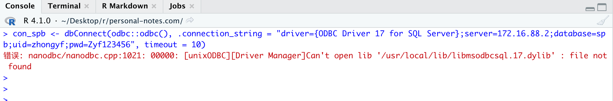

前言
2021年5月19日R更新了,版本号R-4.1.0,现在已经原生支持Apple silicon arm64.也就是m1芯片电脑已经原生支持R语言，不需要通过rosetta转移。
同样，rstudio也更新了桌面预览版支持M1-R,非预览版无法正常启动。
rstudio preview下载地址。
接下来，我们就简单测试下4.1.0下R的速度兼容性，以及是否已经支持很多R包了。
因为本人是商业数据分析师，所以测试内容仅仅只是简单的数据处理的R包，如tidyverse,data.table,rmarkdown,bookdown,readxl,openxlsx等
R安装
- 官网安装

官网下载正常安装即可，或者通过homebrew安装。
R包安装
数据处理包
我常用data.table处理数据,所以第一个安装的R包是data.table，正常安装。接下来安装tidyverse报错，看原因是stringi没办法正确安装，解决办法如下：
- stringi
packageurl <- "https://cran.r-project.org/src/contrib/Archive/stringi/stringi_1.1.7.tar.gz"
install.packages(packageurl, repos=NULL, type="source")
安装stringi包后，tidyverse即可正常使用。
数据库相关
对于我常用的odbc,DBI都可以正常安装，甚至我成功安装SQL SERVER的驱动，如下所示：

但是无法正常连接数据库，据说微软计划下一个版本的odbc会支持m1. .
至于其他的数据库比如mysql，我想是可以成功，没测试。